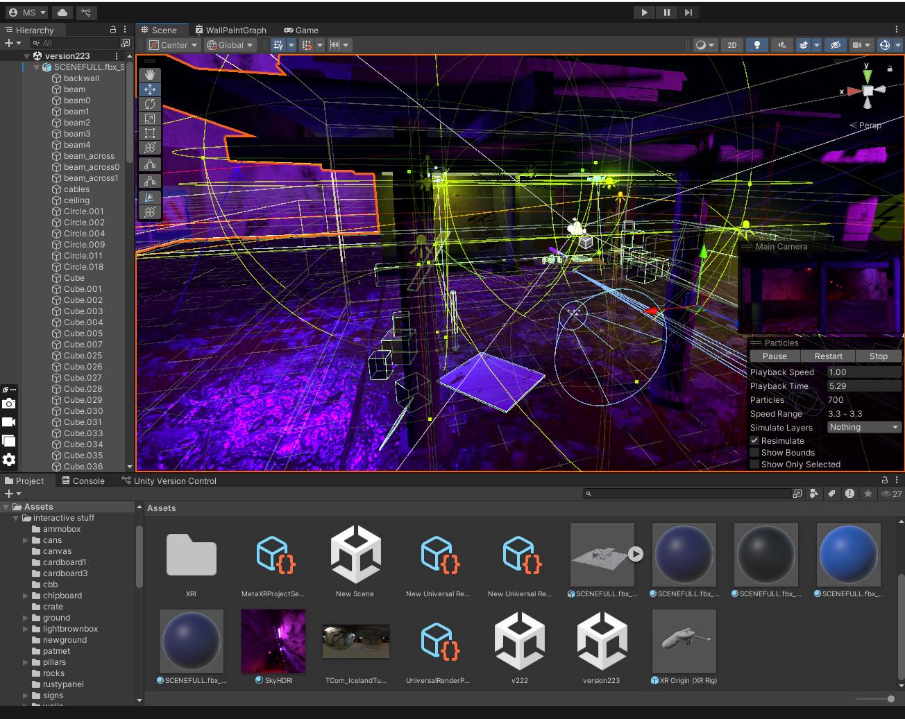
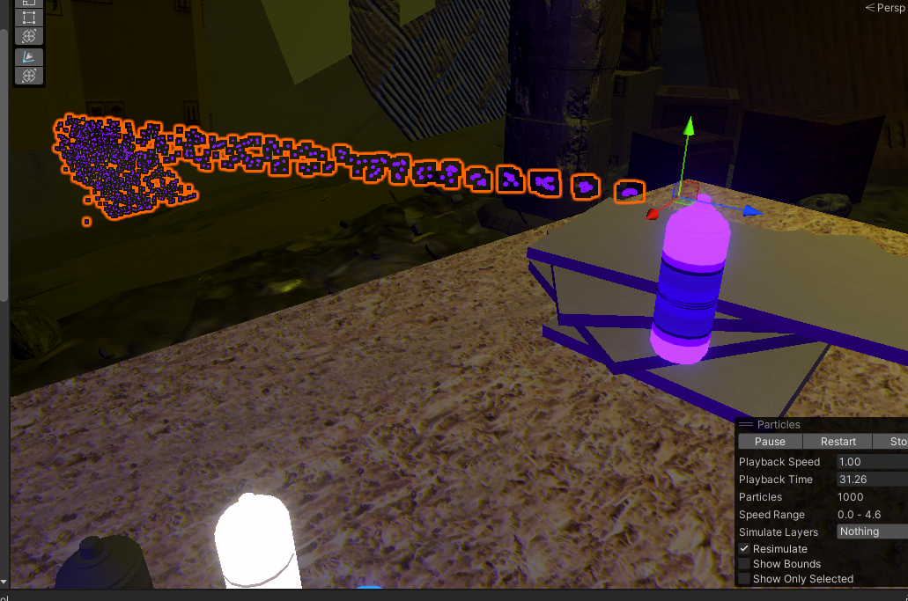
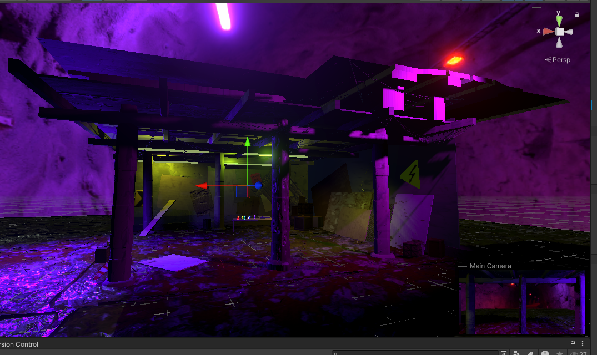

NodeLink is an archive that presents a way to explore ideas and notes in a way that differs from typical notetaking applications. By introducing friction to the interface on purpose, the user is more likely to feel that the notes are more personal and memorable to them once written.
NodeLink is a spatial research archive. It presents research and thoughts as a dense field of interconnected nodes. The notes importance emerges through interaction, not hierarchy, and navigation is very exploratory. It uses real design system logic, such as components, variants, tags, and states.
The project is fairly simple in terms of technology. It was distributed via and executable and simultaneously hosted on itch for demonstration purposes.
This project was developed entirely in Unity and Unity's code editor, utilizng the UI and canvases included in Unity's base kit. First, prefabs were assembled. Then, behavior was defined in scripts, attached to a larger manager, and finally deployed as a full application as an executable, as well as on itch.io.
Difficulties arose in the form of edge cases, unwanted spawn points, and user experience considerations that only became apparent later in the work. Additionally, getting used to the Unity UI features took a bit of time to fully learn and manipulate. Conceptually, the way I drew points and calculated tag weight in the system per frame compared every node to every other node, which meant performance would degrade linearly at high counts. However, this issue only arose in testing, as the user would have to exceed 200 nodes to even start impacting the system.
All environment and prop geometry was authored in Blender. The scene was hosted on Unity and displayed on a Meta Quest 3s, while simultaneously projected onto two TV screens to the sides. Ambient music played in the background. Blockout and modeling were done with VR-scale accuracy in mind, then exported into Unity early to validate spatial proportions in-engine.
Texturing originated in Blender, but Unity import revealed that materials were not loading correctly. To resolve material incompatibility, assets were baked into texture maps. Baking consolidated surface information into textures Unity can reliably consume, avoiding reliance on Blender node graphs that do not carry over. After baking, assets were re-imported inside Unity.
.png)
Unity handled scene layout, lighting configuration, collider setup, physics tuning, and particle system iteration.
Static lighting was baked where possible to reduce runtime cost for VR hardware. Interaction and runtime behavior
were implemented in C# scripts, integrated with XR interaction so objects could be grabbed and thrown.
Particle systems were iterated in the Unity viewport to achieve smooth motion while keeping counts and overdraw within a VR budget.
The project uses Blender for modeling and texturing, Unity for real-time scene assembly, lighting, physics, VFX, and interaction, and C# scripts for runtime systems. Because Blender materials do not reliably translate into Unity, the pipeline depended on texture baking and re-import iteration. Final deployment included PC testing and an Android APK build for Meta Quest.
Development was a huge back and forth loop across modeling, scale validation, prototyping, material troubleshooting, baking, lighting exploration, coding, scene assembly, scripting, VFX polishing, and platform-specific optimization. Unity was implemented early to catch VR-scale issues and used baking to stabilize the Blender-to-Unity material pipeline before final scene and performance work.
The environment began with modeling and blockout in Blender. Structural forms and major props were established first to define the navigable space and the density of the environment. Once the blockout reached a coherent spatial layout, it was exported into Unity specifically to check scale and proportions inside the engine, because VR exaggerates scale errors that might look acceptable in a DCC viewport.
After verifying scale in Unity, core interactability was prototyped by making boxes grabbable and throwable. This
phase focused on adding XR interaction behavior, collider accuracy, and rigidbody stability in the space
before spending time on surface polish. Once interaction behavior worked, I returned to
Blender for texturing and surface development. Then, the fbx was shipped back to Unity. This is when disaster
struck, and it was discovered that every. single. texture. had to be baked in to display properly. This was when it
became known that procedural materials do NOT carry over into other platforms.

I made alternate UV maps for each object. Initially I tried to make a python script to automate this, but scripting was taking longer than manually doing it, so I did each one individually. I then baked everything to prepare it for export. After baking, assets were imported again, and worked. At this point, lighting became the next focus. Multiple lighting configurations were tested to find a balance between neon-heavy stylization, legibility of materials, and runtime performance. This process included baking lighting and, where needed, baking assets to reduce runtime overhead.
With the assets finalized and lighting direction chosen, scene assembly started. Colliders
and bounding volumes were created and tuned for objects throughout the environment to ensure predictable physics,
prevent clipping issues, and maintain stable interaction. After the scene was structurally complete, C# scripting
was implemented to support runtime behaviors and interaction (as documented alongside the attached script
images).

The graffiti system is built around three coordinated C# scripts that manage input, decal spawning, and controlled decay.
SprayInputXR interfaces directly with Unity’s XR system, detecting trigger input only when the spray can is actively grabbed via XRGrabInteractable.
When engaged, it plays the attached ParticleSystem and continuously checks for active splats in the scene, triggering their fade cycle.
SprayHit, which requires a ParticleSystem, converts particle collision events into decal
instances by retrieving impact data, aligning spawned prefabs to the surface normal via
Quaternion.LookRotation, and offsetting them slightly to prevent z-fighting.
Each decal is instantiated at runtime. SplatDestroy governs lifecycle management by
creating a per-instance material copy, linearly interpolating alpha over a defined lifetime using
Mathf.Lerp, and destroying the GameObject when fully transparent, preventing indefinite accumulation.
In short:
.png)
Following scripting, the project returned to in-editor iteration for visual polish, including repeated adjustment of particle systems until motion was smooth and visually consistent without destabilizing performance.

The project was tested on PC to confirm function under comfortable development conditions, then specifically optimized for VR deployment due to graphics and bandwidth restrictions. Optimization included reducing runtime costs through baked lighting, controlling VFX intensity, and testing on standalone Quest 3s. Finally, the project was exported as an APK, deployed to the headset, and presented.

